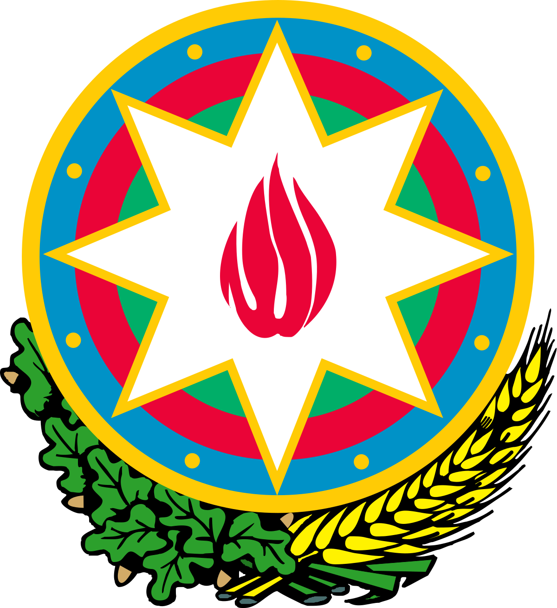

WORK EXPERIENCE
Kapital Bank OJSC
kapitalbank.az
- Specialist (2019)
- Junior specialist June (2018 – 2019)

Central Bank of the Republic of Azerbaijan
cbar.az
- – Junior specialist June (2014 – 2015)
- – Intern (certificate) May – September (2014)
- Department: Statistics Department
- Sector: External Sector Statistics Division
- Work: Balance of payments